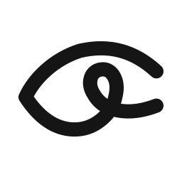
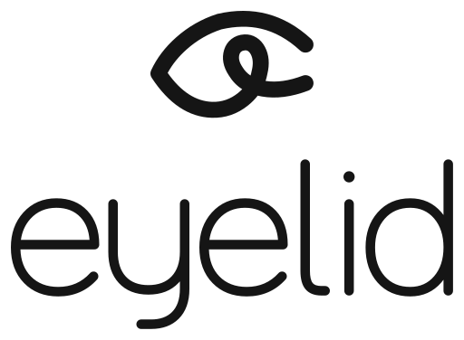

QUICKSAND / 500 E 600
Curvas com
personalidade.
Títulos e mensagens de destaque. A escrita da logo permanece em contornos próprios.
EYELID / IDENTIDADE EM USO
Uma base visual para criar aplicações claras, confiáveis e fáceis de usar. Da presença da marca aos detalhes da interface.
Abrir apresentação PDF ↗Explorar componentes ↓01 / IDENTIDADE
Use a assinatura horizontal como primeira escolha. Preserve o desenho aprovado do símbolo 02 e da escrita 13B.


02 / FUNDAMENTOS
A identidade é monocromática. As cores de estado orientam ações e mensagens nas interfaces.
#151515#FFFFFF#3F3F3F#F4F4F2QUICKSAND / 500 E 600
Títulos e mensagens de destaque. A escrita da logo permanece em contornos próprios.
INTER / 400, 500 E 600
Textos, campos, navegação e tabelas. Corpo em 16 px, apoio em 13 a 14 px e entrelinha de 1,5 a 1,6.
Um detalhe bem resolvido faz diferença.
Escala de espaçamento
48121624324864Cantos consistentes
Campos e botões: 12 px. Cards: 16 px. Blocos de destaque: 24 px.
03 / COMPONENTES
Experimente os campos, filtros e diálogo. Os exemplos funcionam localmente, sem envio de dados.
Uma ação principal por contexto. Alvos com pelo menos 44 px e foco visível pelo teclado.
As informações foram atualizadas.
Há informações pendentes de confirmação.
Confira os dados e tente novamente.
A cor reforça o significado. Sempre use uma mensagem textual.
04 / APLICAÇÃO DE REFERÊNCIA
Exemplo demonstrativo de uma área de projetos. Dados fictícios para avaliar hierarquia, densidade e estados.
VISÃO GERAL
Em andamento
02Em revisão
01Concluídos
01| Projeto | Status | Próxima etapa |
|---|---|---|
| Portal de atendimento | Em andamento | Validar navegação |
| Integração de sistemas | Em andamento | Revisar mapeamento |
| Automação de processos | Em revisão | Confirmar fluxo |
| Painel de operações | Concluído | Entrega realizada |
4 projetos exibidos
05 / REGRAS DE USO
Esta é a base visual das futuras aplicações. Cada produto precisa adaptar os componentes aos seus fluxos e validar acessibilidade e comportamento no contexto real.
06 / REUTILIZAÇÃO
As fontes e suas licenças estão na pasta fonts. Os SVGs da marca não dependem de fontes.